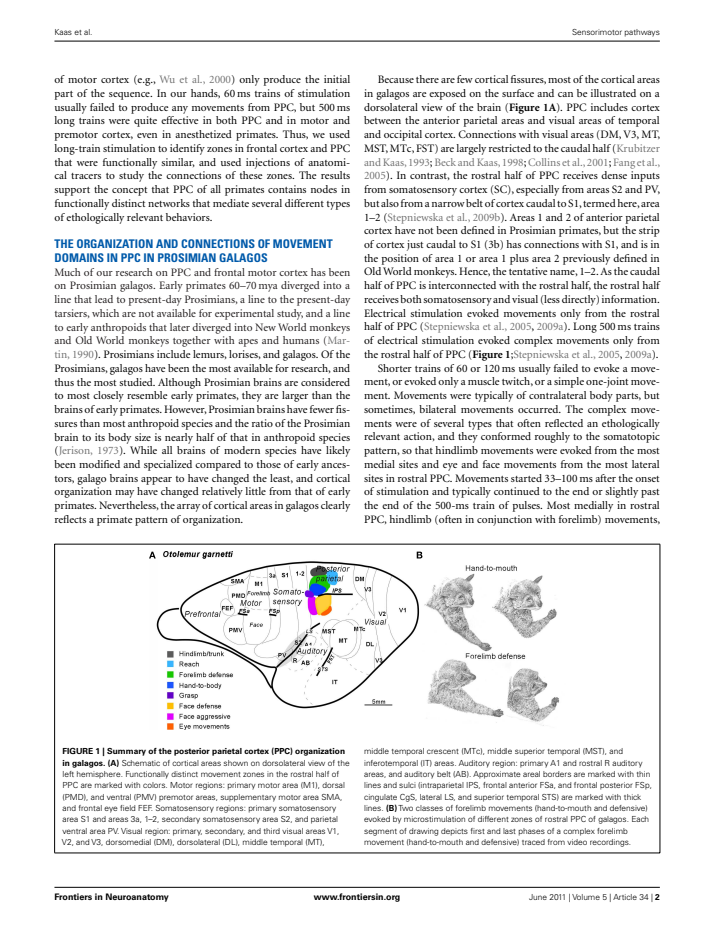
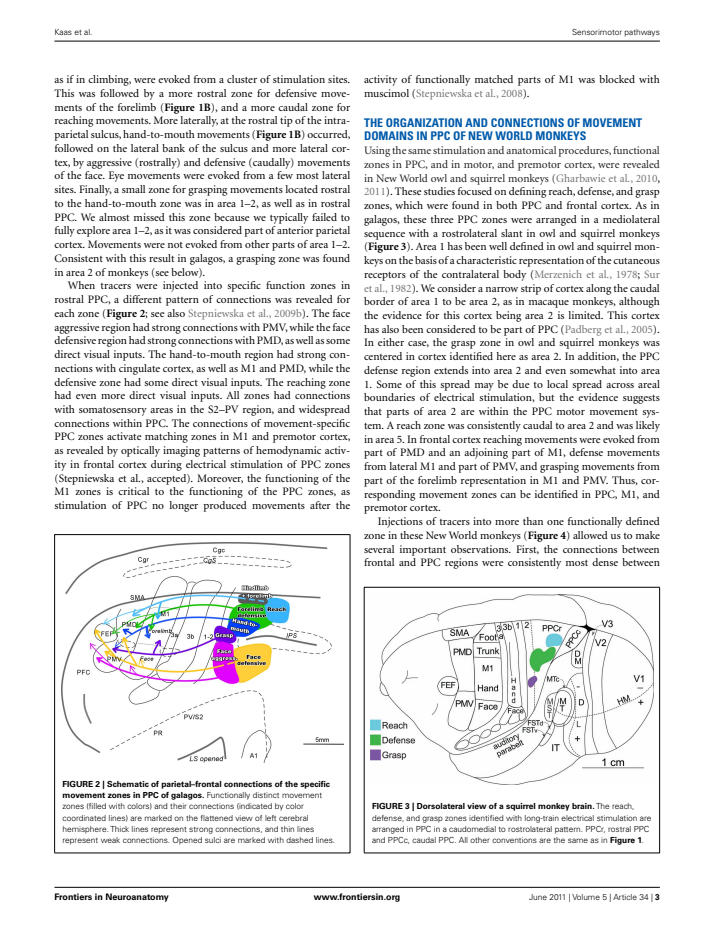
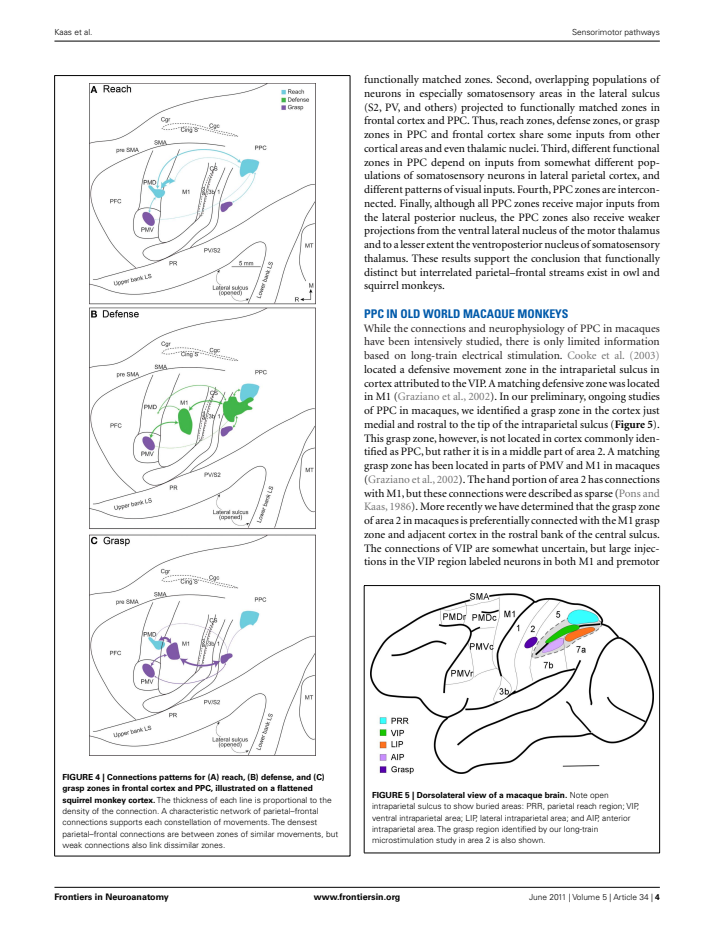
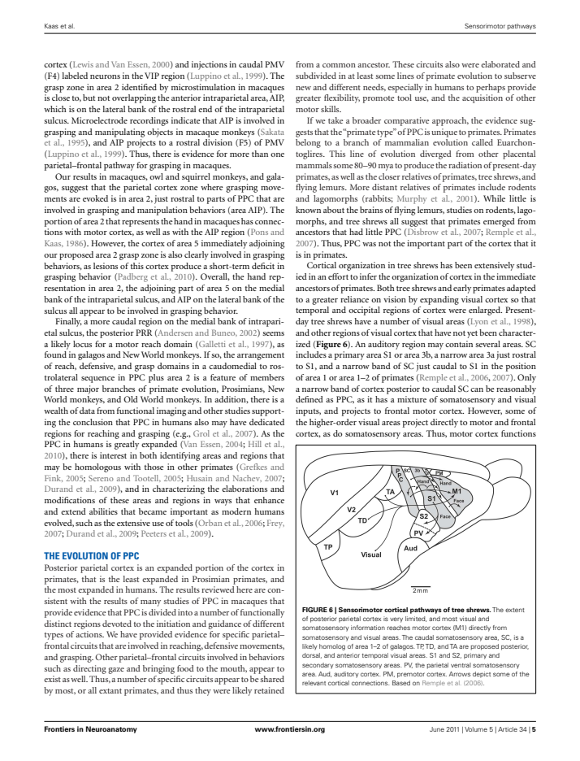

Latest full-dataset recheck: all cases together, source toggles and current inventory
Measurement and summary tables have zero observations. No ImageJ ROI was invented from a schematic or projected view.
Kaas_etal_2011: 6 numbered figures assessed; 0 field/fragment measurements. New tracings are provisional. No certified complete-neocortex denominator is available.
Figure inventory · Methods and limits · Measurements · Complete-field absolute-area summary
Galago dorsolateral summary schematic. Projected summary; no individually identified flattened specimen.
PDF page2; review preview only.

Flattened galago connection schematic. Caption explicitly calls it a schematic; repeated functional zones/connection lines, no individual metric reconstruction.
PDF page3; review preview only.

Squirrel-monkey dorsolateral brain view. Projected brain view; cannot recover cortical surface area from projected shape.
PDF page3; review preview only.
Three flattened squirrel-monkey connection diagrams. Schematic connection-network panels, with no identified specimen reconstruction or defensible whole cortex geometry. Overlaid lines are connections, not cortical borders.
PDF page4; review preview only.

Macaque dorsolateral brain diagram. Projected summary with opened sulcus and schematic fields; no specimen flatmap.
PDF page4; review preview only.
Tree-shrew sensorimotor pathway schematic. Summary based on Remple etal2006, not new individually identified flatmap geometry.
PDF page5; review preview only.
